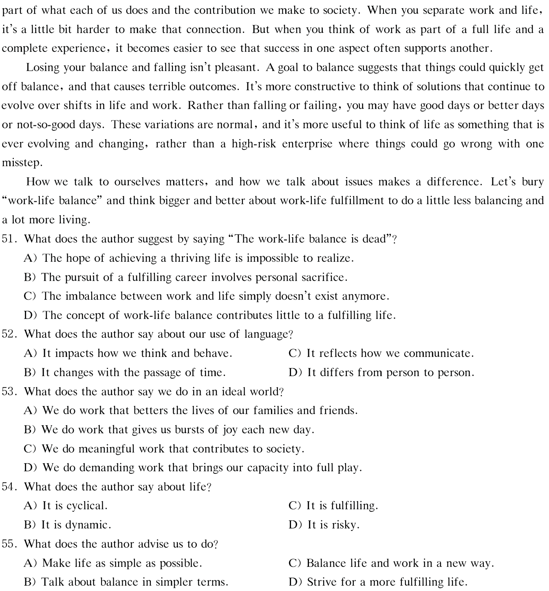
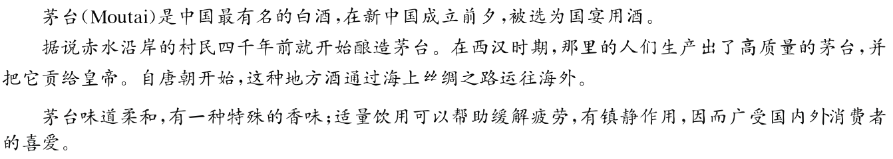

第 1 题 #
1.
点击查看答案
此题暂无可用答案。
大学英语四级 · questions · 2020
题号和章节目录由结构化数据生成。选项按卷面字母顺序显示；原标记保留在 JSON 中。
Directions, For this part, you are allowed 30 minutes to write an essay on online libraries. You can start your essay with the sentence "Online libraries are becoming increasingly popular". You should write at least 120 words but no more than 180 words.
Directions, In this section, you will hear three news reports. At the end of each news report, you will hear two or three questions. Both the news report and the questions will be spoken only once. After you hear a question, you must choose the best answer from the four choices marked A), B), C) and D). Then mark the corresponding letter on Answer Sheet 1 with a single line through the centre.
Questions 1 and 2 are based on the news report you have just heard.
1.
此题暂无可用答案。
2.
Questions 3 and 4 are based on the news report you have just heard.
此题暂无可用答案。
3.
此题暂无可用答案。
4.
Questions 5 to 7 are based on the news report you have just heard.
此题暂无可用答案。
5.
此题暂无可用答案。
6.
此题暂无可用答案。
7.
此题暂无可用答案。
Directions, In this section, you will hear two long conversations. At the end of each conversation, you will hear four questions. Both the conversation and the questions will be spoken only once. After you hear a question, you must choose the best answer from the four choices marked A), B), C) and D). Then mark the corresponding letter on Answer Sheet 1 with a single line through the centre.
Questions 8 to 11 are based on the conversation you have just heard.
8.
此题暂无可用答案。
9.
此题暂无可用答案。
此题暂无可用答案。
11.
Questions 12 to 15 are based on the conversation you have just heard.
此题暂无可用答案。
12.
此题暂无可用答案。
13.
此题暂无可用答案。
此题暂无可用答案。
15.
此题暂无可用答案。
Directions: In this section, you will hear three passages. At the end of each passage, you will hear three or four questions. Both the passage and the questions will be spoken only once. After you hear a question, you must choose the best answer from the four choices marked A ) , B) , C) and D). Then mark the corre:,ponding letter on Answer Sheet 1 with a single line through the centre.
Questions 16 to 18 are based on the passage you have just heard.
此题暂无可用答案。
17.
此题暂无可用答案。
18.
Questions 19 to 21 are based on the passage you have just heard.
此题暂无可用答案。
19.
此题暂无可用答案。
此题暂无可用答案。
21.
Questions 22 to 25 are based on the passage you have just heard.
此题暂无可用答案。
22.
此题暂无可用答案。
23.
此题暂无可用答案。
24.
此题暂无可用答案。
25.
Part ]I Reading Comprehension ( 40 minutes)
此题暂无可用答案。
Directions, In this section, there is a passage with ten blanks. You are required to select one word for each blank from a list of choices given in a word bank following the passage. Read the passage through carefully before making your choices. Each choice in the bank is identified by a letter. Please mark the corresponding letter for each item on Answer Sheet 2 with a single line through the centre. You may ,wt use any of the words in the bank more than once.
There're three main types of financial stress people encounter. The first type is apparent in people being stressed about the 26 ups and downs of investment markets-actually not so much the ups, but 27 the downs. These people are usually unable or unprepared to endure the long haul.
The next common type of financial stress is that caused by debt. In a 28 percentage of cases of debt-induced financial stress, credit cards and loans will be a central element. Often there'll be a car loan and perhaps a mortgage, but credit cards often seem to be the gateway to debt-related financial difficulties for many.
The third type of stress and 29 the least known is inherited financial stress, which is the most destructive. It is experienced by those who have grown up in households where their parents regularly
30 and fought about money. Money therefore becomes a stressful topic, and so the thought of sitting down and planning is an unattractive 31
Those suffering inherited financial anxiety 32 to follow one of two patterns. Either they put their head in the sand, they would 33 examining their financial statements, budgeting, and discussing financial matters with those closest to them. Alternatively, they would go to the other
34 , and micro-analyze everything, to the point of complete 35 . They're convinced that whatever decision they make will be the wrong one.
Directions: In this section, you are going to read a passage with ten statements attached to it. Each statement contains information given in one of the paragraphs. Identify the paragraph from which the information is derived. You may choose a paragraph more than once. Each paragraph is marked with a letter. Answer the questions by marking the corresponding letter on Answer Sheet 2. Doctor's orders: Let children just play
A) Imagine a drug that could enhance a child's creativity and critical thinking. Imagine that this drug were simple to make, safe to take, and could be had for free. The nation's leading pediatricians ( JL,H !E. _i.) say this miracle compound exists. In a new clinical report, they are urging doctors to prescribe it liberally to the children in their care.
B) "This may seem old-fashioned, but there are skills to be learned when kids aren't told what to do," said Dr. Michael Yogman, a Harvard Medical School pediatrician who led the drafting of the call to arms. Whether it's rough physical play, outdoor play or pretend play, kids derive important lessons from the chance to make things up as they go, he said.
C) The advice, issued Monday by the American Academy of Pediatrics, may come as a shock to some parents. After spending years fretting ( ;l:yf ·tit) over which toys to buy, which apps to download and which skill-building programs to send their kids to after school, letting them simply play-or better yet, playing with them-could seem like a step backward. The pediatricians insist that it's not. The academy's guidance does not include specific recommendations for the dosing of play. Instead, it asks doctors to advise parents before their babies turn two that play is essential to healthy development.
D) "Play is not silly behavior," the academy's report declares. It fosters children's creativity, cooperation, and problem-solving skills-all of which are critical for a 2lst-century workforce. When parents engage in play with their children, it builds a wall against the harmful effects of all kinds of stress, including poverty, the academy says. In the pediatricians' view, essentially every life skill that's valued in adults can be built up with play. "Collaboration, negotiation, decision-making, creativity, leadership, and increased physical activity are just some of the skills and benefits children gain through play," they wrote. The pediatricians' appeal comes as kids are being squeezed by increasing academic demands at school and the constant invasion of digital media.
E) The trends have been a long time coming. Between 1981 and 1997, detailed time-use studies showed that the time children spent at play declined by 25 percent. Since the adoption of sweeping education reforms in 2001, public schools have steadily increased the amount of time devoted to preparing for standardized tests. The focus on academic "skills and drills" has cut deeply into recess (-iJf_ fa] 1;/c..,@:) and other time for free play.
F) By 2009, a study of Los Angeles kindergarten classrooms found that five-year-olds were so burdened with academic requirements that they were down to an average of just 19 minutes per day of "choice time," when they were permitted to play freely with blocks, toys or other children. One in four Los Angeles teachers reported there was no time at all for "free play." Increased academic pressures have left 30 percent of U.S. kindergarten classes without any recess. Such findings prompted the American Academy of Pediatrics to issue a policy statement in 2013 on the "crucial role of recess in school."
G) Pediatricians aren't the only ones who have noticed. Tn a report titled "Crisis in the Kindergarten," a group of educators, health professionals and child advocates called the loss of play in early childhood ''a tragedy, both for the children themselves and for our nation and the world." Kids in play-based kindergartens "end up equally good or better at reading and other intellectual skills, and they are more likely to become well-adjusted healthy people," the Alliance for Childhood said in 2009. Indeed, new research demonstrates why playing with blocks might have been time better spent, Yogman said. The trial assessed the effectiveness of an early mathematics intervention ( -tffii) aimed at preschoolers. The results showed almost no gains in math achievement.
H) Another playtime thief: the growing proportion of kids' time spent in front of screens and digital devices, even among preschoolers. Last year, Common Sense Media reported that children up through age eight spent an average of two hours and 19 minutes in front of screens each day, including an average of 42 minutes a day for those under two. This increase of digital use comes with rising risks of obesity, sleep deprivation and cognitive ( iJ.. 9'11 a-ii ) , language and social-emotional delays, the American Academy of Pediatrics warned in 2016.
I) "I respect that parents have busy lives and it's easy to hand a child an iPhone," Yogman said. "But there's a cost to that. For young children, it's much too passive. And kids really learn better when they're actively engaged and have to really discover things."
J) The decline of play is a special hazard for the roughly 1 in 5 children in the United States who live in poverty. These 14 million children most urgently need to develop the resilience ( -'pJ.1 <J}J ) that is cultivated with play. Instead, Yogman said, they are disproportionately affected by some of the trends that are making play scarce: academic pressures at schools that need to improve test scores, outside play areas that are limited or unsafe, and parents who lack the time or energy to share in playtime.
K) Yogman also worries about the pressures that squeeze playtime for more affluent kids. "The notion that as parents we need to schedule every minute of their time is not doing them a great service," he said. Even well-meaning parents may be "robbing them of the opportunity to have that joy of discovery and curiosity-the opportunity to find things out on their own. "
L) Play may not be a hard sell to kids. But UCLA pediatrician Carlos Lerner acknowledged that the pediatricians' new prescription may meet with skepticism OZ-iit.) from parents, who are anxious for advice on how to give their kids a leg up in the world. They should welcome the simplicity of the message, Lerner said. "It's liberating to be able to offer them this advice: that you spending time with your child and letting him play is one of the most valuable things you can do," he said. "It doesn't have to involve spending a lot of money or time, or joining a parenting group. It's something we can offer that's achievable. They just don't recognize it right now as particularly valuable."
36. Increased use of digital devices steals away children's playtime.
此题暂无可用答案。
37. Since the beginning of this century, an increasing amount of time has been shifted in public schools
from recess to academic activities.
此题暂无可用答案。
38. It has been acknowledged that while kids may welcome pediatricians' recommendation, their parents
may doubt its feasibility.
此题暂无可用答案。
39. According to some professionals, deprivation of young children's playtime will do harm not only to
children themselves but to the country and the world.
此题暂无可用答案。
40. By playing with children, parents can prevent them from being harmed by stress.
此题暂无可用答案。
41. Playing with digital devices discourages kids from active discovery, according to pediatrician
Dr. Michael Yogman.
此题暂无可用答案。
42. The suggestion of letting children simply play may sound like going backwards to parents who want to
help build their children's skills.
此题暂无可用答案。
43. Dr. Michael Yogman believes the idea that parents should carefully schedule children's time may not
be helpful to their growth.
此题暂无可用答案。
44. One quarter of teachers in an American city said that children in kindergartens had no time for playing
freely.
此题暂无可用答案。
45. According to a pediatrician, no matter what kind of play children engage in, they are learning how to
create things.
此题暂无可用答案。
Directions: There are 2 passages in this section. Each passage is followed by some questions or unfinished statements. For each of them there are four choices marked A), B), C) and D). You should decide on the best choice and mark the corresponding letter on Answer Sheet 2 with a single line through the centre.
Questions 46 to 50 are based on the following passage.
Americans spend billions of dollars each year trying to change their weight with diets, gym memberships and plastic surgery.
Trying to live up to the images of ''perfect" models and movie heroes has a dark side, anxiety, depression, as well as unhealthy strategies for weight loss or muscle gain. It also has a financial cost. Having an eating disorder boosts annual health care costs by nearly US$ 2,000 per person.
Why is there both external and internal pressure to look "perfect"? One reason is that society rewards people who are thin and healthy-looking. Researchers have shown that body mass index is related to wages and income. Especially for women, there is a clear penalty at work for being overweight or obese. Some studies have also found an impact for men, though a less noticeable one.
While the research literature is clear that labor market success is partly based on how employers and customers perceive your body image, no one had explored the other side of the question. Does a person's own perception of body image matter to earnings and other indicators of success in the workplace?
Our recently published study answered this question by tracking a large national random sample of Americans over a critical time period when bodies change from teenage shape into adult form and when people build their identities.
As in other research, women in our sample tend to over-perceive their weight-they think they're heavier than they are-while men tend to under-perceive theirs.
We found no relationship between the average person's self-perception of weight and labor market outcomes, although self-perceived weight can influence self-esteem ( i1l .:if.,(;), mental health and health behaviors.
While the continued gender penalty in the tabor market is frustrating, our finding that misperceived weight does not harm workers is more heartening.
Since employers' perception of weight is what matters in the tabor market, changing discrimination laws to include body type as a category would help. Michigan is the only state that prohibits discrimination on the basis of weight and height. We believe expanding such protections would make the labor market more fair and efficient.
46. What does the author say may have an adverse impact on people?
此题暂无可用答案。
47. What have researchers found out about people's earnings?
此题暂无可用答案。
48. What does the author's recent study focus on?
此题暂无可用答案。
49. What is the finding of the author's recent research?
此题暂无可用答案。
50. What does the author think would help improve the situation in the labor market?
此题暂无可用答案。
Questions 51 to 55 are based on the following passage.
The work-life balance is dead. By this, I'm not advocating that you should give up your pursuit of having a fulfilling career and a thriving personal life, and I'm definitely not saying that you have to give up one to have the other. I also acknowledge that we have a work-life problem, but I'm arguing that the concept of balance has never been helpful, because it's too limiting. You see, our language makes a difference, and how we refer to things matters because it affects our thinking and therefore our actions.
At the minimum, most of us work because we want to be able to support ourselves, our families, and the people around us. In the ideal world, we're all doing work that we're proud of and that provides meaning and purpose to us. But even if your job doesn't give you shivers of joy each new day, working is a
本页部分文字层异常，已保留原图文字区域；这些区域随窗口缩放，暂不能重新换行或复制。

51. What does the author suggest by saying "The work-life balance is dead"?
此题暂无可用答案。
52. What does the author say about our use of language?
此题暂无可用答案。
53. What does the author say we do in an ideal world?
此题暂无可用答案。
54. What does the author say about life?
此题暂无可用答案。
55. What does the author advise us to do?
此题暂无可用答案。
Directions, For this part, you are allowed 80 minutes to translate a passage from Chinese into English. You should write your answer on Answer Sheet 2.
